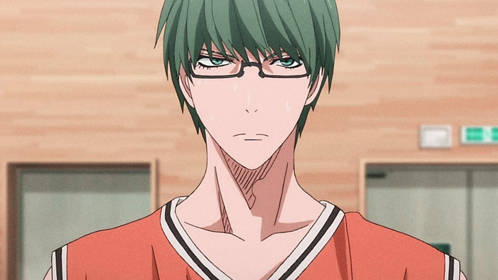

Персонажи

Поколение Чудес
“ Баскетбольный клуб Средней Школы Тейко. Это невероятно сильная команда с более чем 100 членами клуба, на счету которой ряд несколько крупных побед в турнирах из года в год. Но даже в этой блестящей истории до сих пор есть команда, которую по праву называют «сильнейшей». Поколение с пятью игроками, талант которых можно увидеть раз в 10 лет, прозванное - "Поколение Чудес" ”
Поколение Чудес (キセキの世代, Kiseki no Sedai, Generation of Miracles) — это звездная команда Средней Школы Тейко. Команда из 5 (а точнее 6) игроков, каждый из которых владеет своим собственным незаурядным и исключительным талантом. Команда выиграла три года подряд Национальные. По окончанию Средней Школы знаменитые игроки Поколения Чудес разошлись по пяти разным Школам. Будучи некогда единым целым, они стали конкурентами в соревнованиях между Старших Школ, вступив в основные составы баскетбольных команд. Тем не менее ходил странный слух. Несмотря на относительную неизвестность и отсутствие особых записей матчей, был ещё один игрок, приравненный к великой пятерке, — «призрачный шестой игрок» Тецуя Куроко. Так как ходят легенды о гениальной силе участников бывшей команды Тейко, Кагами сразу же обратил внимание на этих баскетболистов. Будучи сверх амбициозным парнем, он поставил своей целью победить каждого из них в баскетболе, в результате став номером Один в Японии. Куроко согласился помочь ему достичь его цели, победив вместе каждого из «Поколения Чудес». Все из «Поколения чудес» по достоинству признаны лучшими игроками в Лиге. Их исключительные таланты способствовали тому, что их стали называть «монстрами». Соперничать с ними могут лишь Куроко, Тайга Кагами, Некоронованные Короли, вполне возможно Химуро (на это, правда, Дайки Аомине заявлял, что Химуро не дотягивает до их уровня), а также некоторые другие игроки, например, Шого Хайзаки.
Дайки Аомине (青峰 大輝, Aomine Daiki) был первоклассным игроком известной команды Поколения Чудес, а также прежним партнером («светом») Куроко в Тейко. В настоящее время он игрок баскетбольного клуба Академии Тоо, являясь Асом, главным бомбардиром и тяжелым форвардом команды. Он и Кагами являются основными соперниками в Межшкольных отборочных и в Зимнем Кубке. Аомине исполнял роль главного антагониста до победы Сейрин в первом раунде Турнира.Ещё с начальной школы и первые годы обучения в Тейко Аомине был очень общительным и дружелюбным парнем. Он часто улыбался, шутил с Куроко и Кисе. Момои однажды сказала, что в детстве Аомине был очень похож на Кагами: также любил играть в баскетбол и получал от этого огромное удовольствие. Однако, благодаря упорным тренировкам в Тейко и врождённому таланту, он стал настолько сильным, что во время матча противники, оценивая его подавляющую мощь, сразу же сдавались и прекращали сопротивляться. Это стало очень огорчать Аомине, и вначале он искренне пытался найти для себя достойного противника в игре. Но в конечном счете, Аомине пришел к выводу, что он просто самый сильный и что «единственный, кто может победить его — это только он сам»
 Шинтаро Мидорима (緑間 真太郎, Midorima Shintarō) — бывший вице-капитан и главный снайпер «Поколения Чудес». Сейчас играет на позиции атакующего защитника в основном составе баскетбольной команды Шутоку, называемой одним из «Трёх Королей Токио». Как правило, Мидорима сдержан в словах и поступках, стараясь находиться отдельно от всех остальных. Однако, если дело доходит до разговоров, то чаще всего ведет себя грубо и вызывающе. Поэтому многие и воспринимают его как высокомерного сноба. Мидориме стоит огромных трудов изображать доброту перед кем бы то ни было, а больше всего он терпеть не может «валять дурака» или выглядеть смешным. Но на удивление хорошо ладящий с ним Такао часто втягивает Мидориму в нечто подобное. Во времена учебы в Тейко Аомине говорил, что Мидорима ответственно подходил к решению любых проблем, а Мурасакибара в свою очередь был слишком небрежен и неряшлив, что и было причиной их частых споров. Несмотря на свою нелюбовь к дурачествам, Шинтаро считает в порядке вещей всегда носить с собой «талисман дня» и безоговорочно верить гороскопу «Oha Asa!». Что самое удивительное, все прогнозы устрашающе верны. Что касается прочих его чудачеств, то он изобрел удивительно точный карандаш-подсказчик (так как экзамены проводятся в форме тестов, то на каждую грань карандаша наносятся варианты ответов, таким образом, кинув карандаш, можно выбрать тот, который он показал).
Рёта Кисе (黄瀬 涼太, Kise Ryota) был одним из участников Поколения Чудес. Сейчас играет в команде Старшей Школы Кайджо на позиции легкого форварда. Известен своей способностью «копирования» стиля других игроков. При копировании может немного изменить способность игрока, усовершенствовав ее.Кисе — очень яркая личность. Он милый и отзывчивый, открытый и разговорчивый, может сдружиться со всеми. Из-за его чрезмерной активности и болтливости иногда может сложиться впечатление, что он глупый и наивный, но это далеко не так. В игре он не раз демонстрировал свои острый ум и логику. Его открытость позволяет ему сдружиться даже с самыми угрюмыми и закрытыми игроками (например, такими как Мидорима). По словам Акаши то, что Кисе так легко со всеми сближается, определенно его самая лучшая черта. Так, например, Кисе был единственный, кто принял Куроко настолько быстро. Одна из исключительных особенностей Кисе — использование суффикса -ччи, который от добавляет в конце имени тех людей, к которым проникся уважением. Главным образом, это касается участников Поколения Чудес: Курокоччи (Куроко), Мидоримаччи (Мидорима), Аоминиччи (Аомине и пр.).
Ацуши Мурасакибара (紫原 敦, Murasakibara Atsushi) занимал позицию центрового в составе Поколения Чудес. На данный момент в составе команды Старшей Школы Йосен соревнуется на турнире Зимнего Кубка. Вопреки впечатлению, связанному с огромным ростом Ацуши, вне игры он ведет себя, словно маленький ребенок. Так как он не любит все проблемные вещи, то по жизни ведёт себя отчасти небрежно, глупо и эксцентрично. Чаще всего в его руках можно увидеть чипсы или пакеты, наполненные различными сладостями. Утверждает, что ненавидит баскетбол и играет в него лишь из-за своего большого таланта. Хотя это не совсем так, потому что на одной из игр он смог войти в Зону, что доказывает наличие у него состязательного духа. Он не раз говорил, что не любит игроков, одержимых духом победы и играющих со страстью. Причиной, по которой он играет в баскетбол, он называет тот факт, что просто у него это получается без особого переутомления. Во времена учёбы в Тейко, Аомине говорил, что Мидорима всегда ответственно подходит к решению любых проблем, а вот Мурасакибара в свою очередь слишком небрежен и неряшлив; это и было причиной споров между двумя последними.
Сейджуро Акаши (赤司 征十郎, Akashi Seijuro) — экс-капитан команды Поколения Чудес во времена Средней Школы Тейко. В старшей школе стал капитаном баскетбольной команды Ракузан. Выступает на позиции разыгрывающего защитника и конкурирует в турнире Зимнего Кубка, являясь главным антагонистом в сюжете «Баскетбол Куроко». Долгое время внешность Акаши сохранялась в секрете, а в сюжете только упоминались некоторые особенности его характера. Его эпизодическое появление в аниме приходится на последний эпизод первого сезона, а официальное знакомство с зрителем произошло только перед самым началом Зимнего Кубка. Именно поэтому Акаши можно по праву назвать самым пугающим и одновременно загадочным персонажем манги. Благодаря своим абсолютным лидерским качествам, он один из немногих, кто был в состоянии контролировать столь гениальные и разносторонние личности, как Поколение Чудес. При поступлении в Старшую Школу Ракузан игроки баскетбольного клуба также признали в нём неоспоримого лидера (несмотря на юный возраст и первый год обучения). В свою очередь, Акаши также испытывает определенное уважение ко всем своим товарищам по команде (Тейко и Ракузан), показывая чрезвычайную веру в их способности.
Тецуя Куроко (黒子 テツヤ, Kuroko Tetsuya) — главный герой манги и аниме «Баскетбол Куроко». Он известен как Призрачный Шестой Игрок легендарной команды «Поколение Чудес». Специализируется на перенаправлении и пасах. Теперь, как постоянный игрок старшей школы Сейрин, намеревается довести свою команду и новый Свет — Тайгу Кагами — к вершине японского баскетбола.Куроко невозмутимый и прямолинейный человек. Он очень трудолюбивый и всегда ставит потребности команды выше своих собственных. Он довольно мрачный и незаметный, что хорошо сочетается с его способностью отвлечения. Также он проявляет большое уважение по отношению к игрокам, страстно любящим баскетбол, и считает, что в то время, как сэмпаями гордятся, к кохаям проявляют уважение[2]. Несмотря на то, что Куроко изначально добрая натура, он может и сильно разозлиться, как было, например, в игре против команды Кирисаки Дайичи, игроки которой прибегали к незаметному нарушению правил, травмируя своих соперников. Его аура поменялась настолько резко, что Кагами даже испытал страх, увидев Куроко таким[3]. Когда Тецуя злится, очень сложно победить его, поскольку он переполнен боевым духом. Кроме того, осознать настоящий ужас от состояния Куроко можно, когда в таком состоянии ярости он еще и начинает отчитывать объект своего гнева. Он метафорически называет себя «Тенью»[5]. Это означает, что он играет в паре с кем-то (своим «Светом»), и, чем ярче становится его «Свет», тем сильнее начинает играть и он. Под «Светом» он подразумевает игрока-напарника: во время Средней Школы им был Аомине, а в Старшей Школе — Кагами.
Тайга Кагами (火神 大我, Kagami Taiga) — один из главных героев аниме Баскетбол Куроко. Он играет в баскетбольном клубе Старшей Школы Сейрин, выступая на позиции тяжёлого форварда, и является главным Асом команды. Его лучший друг — Тецуя Куроко — выступает для Кагами в качестве основного товарища и на баскетбольной площадке. Вместе они формируют высокоэффективный игровой тандем Сейрин под названием «Свет и Тень». По возвращении в Японию Кагами полон решимости победить гениальных баскетбольных игроков из Поколения Чудес, тем самым завоевав себе звание Лучшего игрока в Японии. Обладая исключительными физическими способностями и врождённым игровым талантом в баскетболе, Кагами заслуженно был прозван «Чудом, не ставшим одним из Чудес».Кагами очень амбициозный, решительный и упрямый парень. Он отказывается сдаваться даже в трудной ситуации, проявляя всю силу своего духа. Его не убиваемый и горячий боевой дух стал широко известным не только игрокам его команде, но и соперникам. Кагами наслаждается игрой с сильными противниками, не находя смысла игры в баскетбол с недостойными и слабыми соперниками. Если Кагами не дают применить всю свою силу на площадке, из-за своей вспыльчивости он быстро выходит из себя. Однако в этих случаях с укрощением импульсивности Кагами прекрасно справляется рассудительный Куроко.